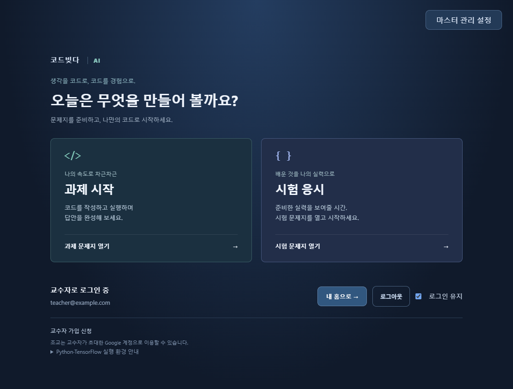
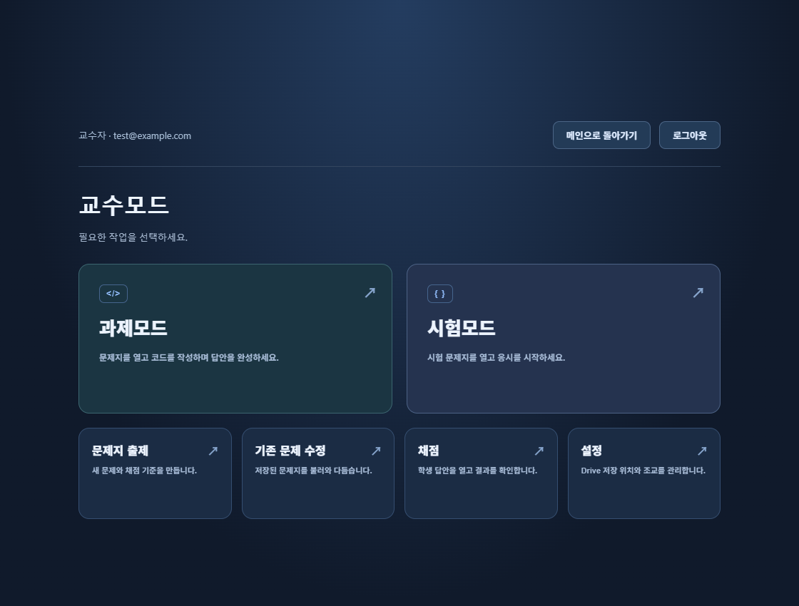
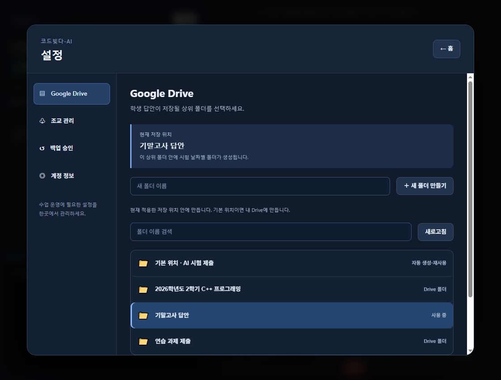

코드빚다-AI
AI 2.0.0 · Microsoft Store 심사 중직접 실행하며
배우는 AI.
텐서 연산부터 회귀와 그래프까지.
실습·과제·시험을 한곳에서 시작하세요.
직접 풀고,
실행하며 확인하세요.
제공된 문제와 시작 코드를 바탕으로 핵심 코드를 작성합니다. 출력 비교가 가능한 문제는 실행 결과를 확인하고, 수동 채점 문제는 교수자의 검토를 받습니다.
수업의 기록은
교수자의 Drive에.
교수자는 Google 계정으로 가입하고 승인 후 자신의 Drive를 연결합니다. 초대한 조교와 문제를 수정하고 채점하며, 학생은 Google 로그인 없이 답안을 제출합니다. 제출 파일과 제출학생명단은 연결된 교수자의 폴더에 저장됩니다.
코드빚다-AI 2.0.0이 심사 중입니다.
Windows용 AI 실습·과제·시험 앱입니다. Microsoft Store 인증 심사를 요청했습니다. 아직 스토어에서 다운로드할 수 없으며, 공개 후 안내합니다. 교수자 서비스는 AI 앱에서 별도 승인이 필요합니다. Java·C++ 앱의 승인은 AI에 자동 적용되지 않습니다.
Python·TensorFlow CPU 실행 환경 내장 · 코드 실행과 그래프 생성 · 출력 비교 자동채점 · 교수자 확인 채점 · 20초 간격 암호화 백업 · 교수자 승인 복구를 지원합니다.
시험 모드에서는 창 이동 제한과 보조 모니터 가림이 적용됩니다. 과제 모드와 구분해 이용하세요.
Python·TensorFlow가 포함되어 있습니다.
별도 설치 없이 Python 3.11, TensorFlow 2.15.1, NumPy, Matplotlib로 실습합니다. Windows CPU 환경을 사용하며, 첫 실행은 라이브러리 준비에 시간이 걸릴 수 있습니다. 실행 속도는 컴퓨터 사양에 따라 달라집니다.
TensorFlow는 Apache License 2.0으로 제공됩니다. Python 및 관련 라이브러리는 각각의 라이선스를 따르며, 배포 앱에 원문 고지가 포함되어 있습니다. 코드빚다는 Google 또는 TensorFlow 프로젝트의 공식 제품이 아닙니다.
실제 앱 화면
과제와 시험을 시작하고, 교수자 홈에서 출제·수정·채점을 관리합니다. 아래 화면은 예시 계정과 테스트 폴더로 촬영했습니다.


